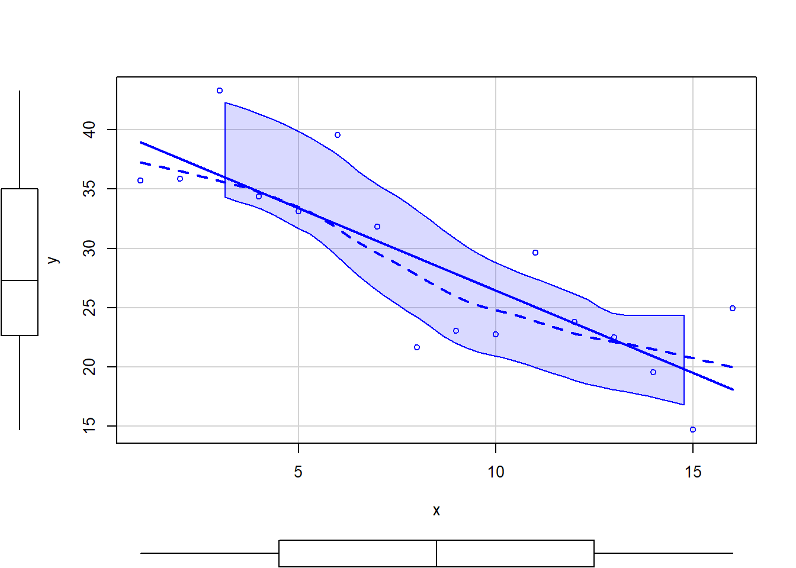
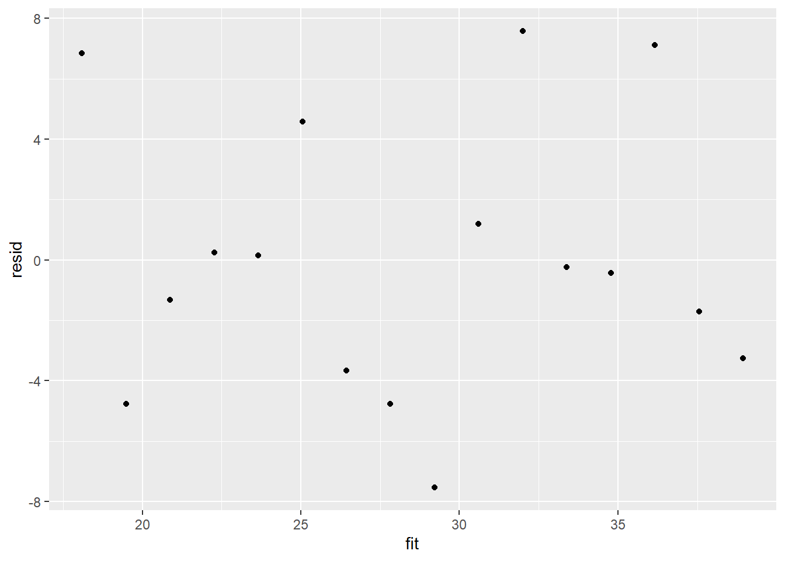
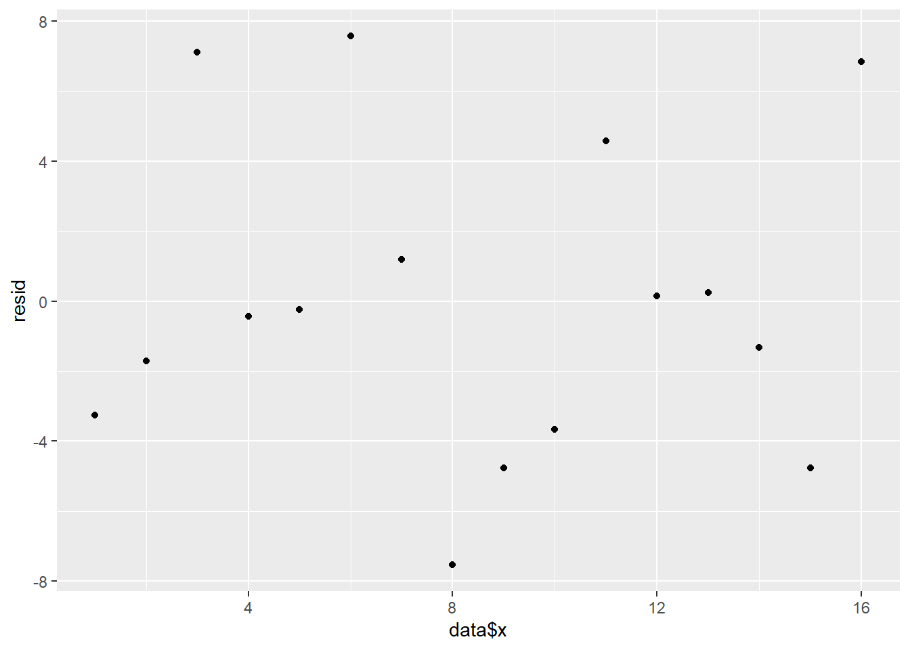
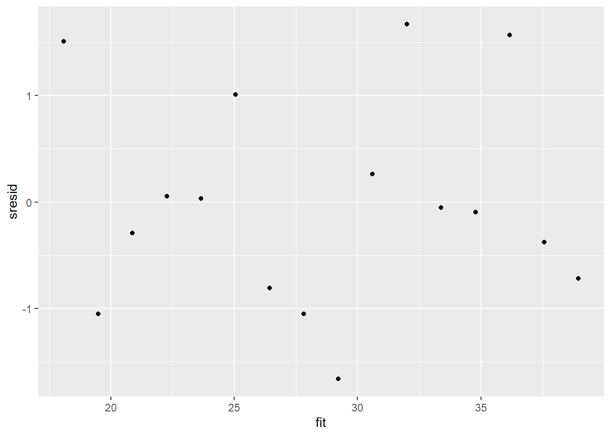
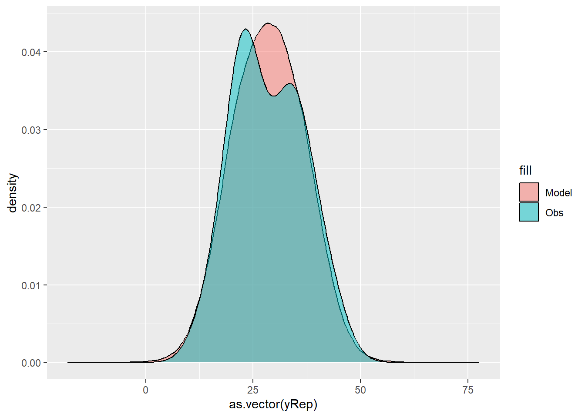
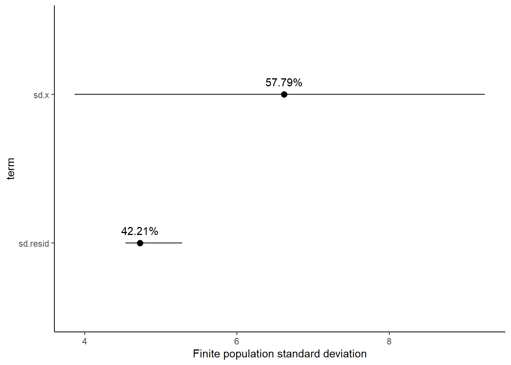

This tutorial will focus on the use of Bayesian estimation to fit simple linear regression models …
Keywords
Software, Statistics, Stan
This tutorial will focus on the use of Bayesian estimation to fit simple linear regression models. BUGS (Bayesian inference Using Gibbs Sampling) is an algorithm and supporting language (resembling R) dedicated to performing the Gibbs sampling implementation of Markov Chain Monte Carlo (MCMC) method. Dialects of the BUGS language are implemented within three main projects:
OpenBUGS - written in component pascal.
JAGS - (Just Another Gibbs Sampler) - written in C++.
STAN - a dedicated Bayesian modelling framework written in C++ and implementing Hamiltonian MCMC samplers.
Whilst the above programs can be used stand-alone, they do offer the rich data pre-processing and graphical capabilities of R, and thus, they are best accessed from within R itself. As such there are multiple packages devoted to interfacing with the various software implementations:
R2OpenBUGS - interfaces with OpenBUGS
R2jags - interfaces with JAGS
rstan - interfaces with STAN
This tutorial will demonstrate how to fit models in JAGS (Plummer (2004)) using the package R2jags (Su et al. (2015)) as interface, which also requires to load some other packages.
Overview
Introduction
Many clinicians get a little twitchy and nervous around mathematical and statistical formulae and nomenclature. Whilst it is possible to perform basic statistics without too much regard for the actual equation (model) being employed, as the complexity of the analysis increases, the need to understand the underlying model becomes increasingly important. Moreover, model specification in BUGS/JAGS/STAN (the language used to program Bayesian modelling) aligns very closely to the underlying formulae. Hence a good understanding of the underlying model is vital to be able to create a sensible Bayesian model. Consequently, I will always present the linear model formulae along with the analysis.
To introduce the philosophical and mathematical differences between classical (frequentist) and Bayesian statistics, based on previous works, we present a provocative yet compelling trend analysis of two hypothetical populations (A vs B). The temporal trend of population A shows very little variability from a very subtle linear decline (\(n=10\), \(\text{slope}=-0.10\), \(\text{p-value}=0.048\)). By contrast, the B population appears to decline more dramatically, yet has substantially more variability (\(n=10\), \(\text{slope}=-10.23\), \(\text{p-value}=0.058\)). From a traditional frequentist perspective, we would conclude that there is a “significant” relationship in Population A (\(p<0.05\)), yet not in Population B (\(p>0.05\)). However, if we consider a third population C which is exactly the same as populstion B but with a higher number of observations, then we may end up with a completely different conclusion compared with that based on population B (\(n=100\), \(\text{slope}=-10.47\), \(\text{p-value}<0.001\)).
The above illustrates a couple of things:
statistical significance does not necessarily translate into clinical importance. Indeed, population B is declining at nearly \(10\) times the rate of population A. That sounds rather important, yet on the basis of the hypothesis test, we would dismiss the decline in population B.
that a p-value is just the probability of detecting an effect or relationship - what is the probability that the sample size is large enough to pick up a difference.
Let us now look at it from a Bayesian perspective, with a focus on population A and B. We would conclude that:
the mean (plus or minus CI) slopes for Population A and B are \(-0.1 (-0.21,0)\) and \(-10.08 (-20.32,0.57)\) respectively
the Bayesian approach allows us to query the posterior distribution is many other ways in order to ask sensible clinical questions. For example, we might consider that a rate of change of \(5\)% or greater represents an important biological impact. For population A and B, the probability that the rate is \(5\)% or greater is \(0\) and \(0.85\) respectively.
Linear regression
Simple linear regression is a linear modelling process that models a continuous response against a single continuous predictor. The linear model is expressed as:
where \(y_i\) is the response variable for each of the \(i=1\ldots,n\) observations, \(\beta_0\) is the intercept (value when \(x=0\)), \(\beta_1\) is the slope (rate of change in \(y\) per unit change in \(x\)), \(x_i\) is the predictor variable, \(\epsilon_i\) is the residual value (difference between the observed value and the value expected by the model). The parameters of the trendline \(\boldsymbol \beta=(\beta_0,\beta_1)\) are determined by Ordinary Least Squares (OLS) in which the sum of the squared residuals is minimized. A non-zero population slope is indicative of a relationship.
Data generation
Lets say we had set up an experiment in which we applied a continuous treatment (\(x\)) ranging in magnitude from \(0\) to \(16\) to a total of \(16\) sampling units (\(n=16\)) and then measured a response (\(y\)) from each unit. As this section is mainly about the generation of artificial data (and not specifically about what to do with the data), understanding the actual details are optional and can be safely skipped.
set.seed(123)n <-16a <-40#interceptb <--1.5#slopesigma2 <-25#residual variance (sd=5)x <-1:n #values of the year covariateeps <-rnorm(n, mean =0, sd =sqrt(sigma2)) #residualsy <- a + b * x + eps #response variable# ORy <- (model.matrix(~x) %*%c(a, b)) + epsdata <-data.frame(y, x) #datasethead(data) #print out the first six rows of the data set
NA y x
NA 1 35.69762 1
NA 2 35.84911 2
NA 3 43.29354 3
NA 4 34.35254 4
NA 5 33.14644 5
NA 6 39.57532 6
With these sort of data, we are primarily interested in investigating whether there is a relationship between the continuous response variable and the linear predictor (single continuous predictor).
Centering the data
When a linear model contains a covariate (continuous predictor variable) in addition to another predictor (continuous or categorical), it is nearly always advisable that the continuous predictor variables are centered prior to the analysis. Centering is a process by which the mean of a variable is subtracted from each of the values such that the scale of the variable is shifted so as to be centered around \(0\). Hence the mean of the new centered variable will be \(0\), yet it will retain the same variance.
There are multiple reasons for this:
It provides some clinical meaning to the \(y\)-intercept. Recall that the \(y\)-intercept is the value of \(Y\) when \(X\) is equal to zero. If \(X\) is centered, then the \(y\)-intercept represents the value of \(Y\) at the mid-point of the \(X\) range. The \(y\)-intercept of an uncentered \(X\) typically represents a unreal value of \(Y\) (as an \(X\) of \(0\) is often beyond the reasonable range of values).
In multiplicative models (in which predictors and their interactions are included), main effects and interaction terms built from centered predictors will not be correlated to one another.
For more complex models, centering the covariates can increase the likelihood that the modelling engine converges (arrives at a numerically stable and reliable outcome).
Note, centering will not effect the slope estimates. In R, centering is easily achieved with the scale function.
data <-within(data, { cx <-as.numeric(scale(x, scale =FALSE))})head(data)
NA y x cx
NA 1 35.69762 1 -7.5
NA 2 35.84911 2 -6.5
NA 3 43.29354 3 -5.5
NA 4 34.35254 4 -4.5
NA 5 33.14644 5 -3.5
NA 6 39.57532 6 -2.5
Exploratory data analysis
Normality
Estimation and inference testing in linear regression assumes that the response is normally distributed in each of the populations. In this case, the populations are all possible measurements that could be collected at each level of \(x\) - hence there are \(16\) populations. Typically however, we only collect a single observation from each population (as is also the case here). How then can be evaluate whether each of these populations are likely to have been normal? For a given response, the population distributions should follow much the same distribution shapes. Therefore provided the single samples from each population are unbiased representations of those populations, a boxplot of all observations should reflect the population distributions.
Homogeneity of variance
Simple linear regression also assumes that each of the populations are equally varied. Actually, it is prospect of a relationship between the mean and variance of \(y\)-values across x-values that is of the greatest concern. Strictly the assumption is that the distribution of \(y\) values at each \(x\) value are equally varied and that there is no relationship between mean and variance. However, as we only have a single \(y\)-value for each \(x\)-value, it is difficult to directly determine whether the assumption of homogeneity of variance is likely to have been violated (mean of one value is meaningless and variability can’t be assessed from a single value). If we then plot the residuals (difference between observed values and those predicted by the trendline) against the predict values and observe a definite presence of a pattern, then it is indicative of issues with the assumption of homogeneity of variance.
Hence looking at the spread of values around a trendline on a scatterplot of \(y\) against \(x\) is a useful way of identifying gross violations of homogeneity of variance. Residual plots provide an even better diagnostic. The presence of a wedge shape is indicative that the population mean and variance are related.
Linearity
Linear regression fits a straight (linear) line through the data. Therefore, prior to fitting such a model, it is necessary to establish whether this really is the most sensible way of describing the relationship. That is, does the relationship appear to be linearly related or could some other non-linear function describe the relationship better. Scatterplots and residual plots are useful diagnostics.
Model assumptions
The typical assumptions which need to be checked when fitting a standard linear regression model are:
All of the observations are independent - this must be addressed at the design and collection stages
The response variable (and thus the residuals) should be normally distributed
The response variable should be equally varied (variance should not be related to mean as these are supposed to be estimated separately)
The relationship between the linear predictor (right hand side of the regression formula) and the link function should be linear. A scatterplot with smoother can be useful for identifying possible non-linearity.
So lets explore normality, homogeneity of variances and linearity by constructing a scatterplot of the relationship between the response (\(y\)) and the predictor (\(x\)). We will also include a range of smoothers (linear and lowess) and marginal boxplots on the scatterplot to assist in exploring linearity and normality respectively.
# scatterplotlibrary(car)scatterplot(y ~ x, data)

Conclusions:
There is no evidence that the response variable is non-normal. The spread of values around the trendline seems fairly even (hence it there is no evidence of non-homogeneity). The data seems well represented by the linear trendline. Furthermore, the lowess smoother does not appear to have a consistent shift trajectory. Obvious violations could be addressed either by:
Consider a non-linear linear predictor (such as a polynomial, spline or other non-linear function)
Transform the scale of the response variables (e.g. to address normality)
Model fitting
The purpose of fitting a model in this case is to explore the relationship between \(y\) and \(x\). Since both \(y\) and \(x\) are continuous, a simple regression line is a good start. The observed response (\(y_i\)) are assumed to be drawn from a normal distribution with a given mean (\(\mu\)) and standard deviation (\(\sigma\)). The expected values (\(\mu\)) are themselves determined by the linear predictor (\(\beta_0+\beta_1\)). In this case, \(\beta_0\) represents the \(y\)-intercept (value of \(y\) when \(x\) is equal to zero) and \(\beta_1\) represents the rate of change in \(y\) for every unit change in \(x\) (the effect).
Note that in this form, the \(y\)-intercept is of little interest. Indeed for many applications, a value of x would be outside the domain of the collected data, outside the logical bounds of the actual variable or else outside the domain of interest. If however, we center the predictor variable (by subtracting the mean of \(x\) from each \(x\), then the \(y\)-intercept represents the value of \(y\) at the average value of \(x\). This certainly has more meaning. Note that centering the predictor does not effect the estimate of slope. MCMC sampling requires priors on all parameters. We will employ weakly informative priors. Specifying “uninformative” priors is always a bit of a balancing act. If the priors are too vague (wide) the MCMC sampler can wander off into nonscence areas of likelihood rather than concentrate around areas of highest likelihood (desired when wanting the outcomes to be largely driven by the data). On the other hand, if the priors are too strong, they may have an influence on the parameters. In such a simple model, this balance is very forgiving - it is for more complex models that prior choice becomes more important.
For this simple model, we will go with zero-centered Gaussian (normal) priors with relatively large standard deviations (1000) for both the intercept and the treatment effect and a wide half-cauchy (\(\text{scale}=25\)) for the standard deviation.
\[
y_i \sim \text{Normal}(\mu_i, \sigma),
\]
where \(\mu_i=\beta_0+\beta_1x_i\). Priors are specified as: \(\boldsymbol \beta \sim \text{Normal}(0,1000)\) and \(\sigma \sim \text{Cauchy}(0,25)\). We will explore Bayesian modelling of simple linear regression using JAGS. Remember that in this software normal distributions are specified in terms of precision \(\tau\) rather than standard deviation \(\sigma\), where \(\tau=\frac{1}{\sigma^2}\). In addition, we will derive the following quantities.
The probability that \(y\) decline by more than \(25\)%
The finite-population variance components
modelString =" model { #Likelihood for (i in 1:n) { y[i]~dnorm(mu[i],tau) mu[i] <- beta0+beta1*x[i] y.err[i] <- y[i] - mu[i] } #Priors beta0 ~ dnorm(0.01,1.0E-6) beta1 ~ dnorm(0,1.0E-6) tau <- 1 / (sigma * sigma) sigma~dunif(0,100) #Other Derived parameters p.decline <- 1-step(beta1) ymin<-beta0+beta1*min(x) xrange <- max(x) - min(x) decline <- 100*((xrange*beta1)+ymin)/ymin p.decline25 <- step(decline-25) #finite-population variance components sd.x <- abs(beta1)*sd(x[]) sd.resid <- sd(y.err) } "## write the model to a text filewriteLines(modelString, con ="ttestModel.txt")
Arrange the data as a list (as required by JAGS). As input, JAGS will need to be supplied with: the response variable, the predictor variable, the total number of observed items. This all needs to be contained within a list object. We will create two data lists, one for each of the hypotheses.
data.list <-with(data, list(y = y, x = x, n =nrow(data)))data.list
NA $y
NA [1] 35.69762 35.84911 43.29354 34.35254 33.14644 39.57532 31.80458 21.67469
NA [9] 23.06574 22.77169 29.62041 23.79907 22.50386 19.55341 14.72079 24.93457
NA
NA $x
NA [1] 1 2 3 4 5 6 7 8 9 10 11 12 13 14 15 16
NA
NA $n
NA [1] 16
Define the initial values for the chain. Reasonable starting points can be gleaned from the data themselves.
Start the JAGS model (check the model, load data into the model, specify the number of chains and compile the model). Load the R2jags package.
library(R2jags)
When using the jags function (R2jags package), it is not necessary to provide initial values. However, if they are to be supplied, the initial values must be provided as a list of the same length as the number of chains. Then print the results.
NA Compiling model graph
NA Resolving undeclared variables
NA Allocating nodes
NA Graph information:
NA Observed stochastic nodes: 16
NA Unobserved stochastic nodes: 3
NA Total graph size: 109
NA
NA Initializing model
print(data.r2jags)
NA Inference for Bugs model at "ttestModel.txt", fit using jags,
NA 2 chains, each with 10500 iterations (first 3000 discarded)
NA n.sims = 15000 iterations saved
NA mu.vect sd.vect 2.5% 25% 50% 75% 97.5% Rhat n.eff
NA beta0 40.332 2.779 34.814 38.547 40.341 42.142 45.768 1.001 15000
NA beta1 -1.390 0.283 -1.957 -1.571 -1.390 -1.209 -0.822 1.001 15000
NA sigma 5.187 1.125 3.549 4.399 5.009 5.772 7.848 1.001 14000
NA deviance 96.319 2.919 93.005 94.208 95.578 97.595 103.875 1.001 15000
NA
NA For each parameter, n.eff is a crude measure of effective sample size,
NA and Rhat is the potential scale reduction factor (at convergence, Rhat=1).
NA
NA DIC info (using the rule, pD = var(deviance)/2)
NA pD = 4.3 and DIC = 100.6
NA DIC is an estimate of expected predictive error (lower deviance is better).
MCMC diagnostics
In addition to the regular model diagnostic checks (such as residual plots), for Bayesian analyses, it is necessary to explore the characteristics of the MCMC chains and the sampler in general. Recall that the purpose of MCMC sampling is to replicate the posterior distribution of the model likelihood and priors by drawing a known number of samples from this posterior (thereby formulating a probability distribution). This is only reliable if the MCMC samples accurately reflect the posterior. Unfortunately, since we only know the posterior in the most trivial of circumstances, it is necessary to rely on indirect measures of how accurately the MCMC samples are likely to reflect the likelihood. I will briefly outline the most important diagnostics.
Traceplots for each parameter illustrate the MCMC sample values after each successive iteration along the chain. Bad chain mixing (characterised by any sort of pattern) suggests that the MCMC sampling chains may not have completely traversed all features of the posterior distribution and that more iterations are required to ensure the distribution has been accurately represented.
Autocorrelation plot for each parameter illustrate the degree of correlation between MCMC samples separated by different lags. For example, a lag of \(0\) represents the degree of correlation between each MCMC sample and itself (obviously this will be a correlation of \(1\)). A lag of \(1\) represents the degree of correlation between each MCMC sample and the next sample along the chain and so on. In order to be able to generate unbiased estimates of parameters, the MCMC samples should be independent (uncorrelated).
Potential scale reduction factor (Rhat) statistic for each parameter provides a measure of sampling efficiency/effectiveness. Ideally, all values should be less than \(1.05\). If there are values of \(1.05\) or greater it suggests that the sampler was not very efficient or effective. Not only does this mean that the sampler was potentially slower than it could have been but, more importantly, it could indicate that the sampler spent time sampling in a region of the likelihood that is less informative. Such a situation can arise from either a misspecified model or overly vague priors that permit sampling in otherwise nonscence parameter space.
Prior to examining the summaries, we should have explored the convergence diagnostics. We use the package mcmcplots to obtain density and trace plots for the effects model as an example. When there are a lot of parameters, this can result in a very large number of traceplots. To focus on just certain parameters, e.g. \(\boldsymbol \beta\).
NA [[1]]
NA
NA Quantile (q) = 0.025
NA Accuracy (r) = +/- 0.005
NA Probability (s) = 0.95
NA
NA Burn-in Total Lower bound Dependence
NA (M) (N) (Nmin) factor (I)
NA beta0 3 4115 3746 1.10
NA beta1 2 3855 3746 1.03
NA deviance 3 4026 3746 1.07
NA sigma 4 4907 3746 1.31
NA
NA
NA [[2]]
NA
NA Quantile (q) = 0.025
NA Accuracy (r) = +/- 0.005
NA Probability (s) = 0.95
NA
NA Burn-in Total Lower bound Dependence
NA (M) (N) (Nmin) factor (I)
NA beta0 2 3938 3746 1.05
NA beta1 2 3770 3746 1.01
NA deviance 2 3811 3746 1.02
NA sigma 4 4853 3746 1.30
The Raftery diagnostics for each chain estimate that we would require no more than \(5000\) samples to reach the specified level of confidence in convergence. As we have \(10500\) samples, we can be confidence that convergence has occurred.
NA beta0 beta1 deviance sigma
NA Lag 0 1.000000000 1.0000000000 1.000000000 1.00000000
NA Lag 1 -0.007010696 0.0009369893 0.397147648 0.46491253
NA Lag 5 0.002086800 0.0011849092 0.049133264 0.05413994
NA Lag 10 0.005430778 0.0054667236 0.008226042 0.01218053
NA Lag 50 -0.011848951 -0.0054465800 -0.014357351 -0.01271746
A lag of 10 appears to be sufficient to avoid autocorrelation (poor mixing).
Model validation
Model validation involves exploring the model diagnostics and fit to ensure that the model is broadly appropriate for the data. As such, exploration of the residuals should be routine. Ideally, a good model should also be able to predict the data used to fit the model.
Although residuals can be computed directly within R2jags, we can calculate them manually from the posteriors to be consistent across other approaches.
library(ggplot2)mcmc = data.r2jags$BUGSoutput$sims.matrix[, c("beta0", "beta1")]# generate a model matrixnewdata =data.frame(x = data$x)Xmat =model.matrix(~x, newdata)## get median parameter estimatescoefs =apply(mcmc, 2, median)fit =as.vector(coefs %*%t(Xmat))resid = data$y - fitggplot() +geom_point(data =NULL, aes(y = resid, x = fit))

Residuals against predictors
mcmc = data.r2jags$BUGSoutput$sims.matrix[, c("beta0", "beta1")]# generate a model matrixnewdata =data.frame(x = data$x)Xmat =model.matrix(~x, newdata)## get median parameter estimatescoefs =apply(mcmc, 2, median)fit =as.vector(coefs %*%t(Xmat))resid = data$y - fitggplot() +geom_point(data =NULL, aes(y = resid, x = data$x))

And now for studentized residuals
mcmc = data.r2jags$BUGSoutput$sims.matrix[, c("beta0", "beta1")]# generate a model matrixnewdata =data.frame(x = data$x)Xmat =model.matrix(~x, newdata)## get median parameter estimatescoefs =apply(mcmc, 2, median)fit =as.vector(coefs %*%t(Xmat))resid = data$y - fitsresid = resid/sd(resid)ggplot() +geom_point(data =NULL, aes(y = sresid, x = fit))

For this simple model, the studentized residuals yield the same pattern as the raw residuals (or the Pearson residuals for that matter). Lets see how well data simulated from the model reflects the raw data.
mcmc = data.r2jags$BUGSoutput$sims.matrix# generate a model matrixXmat =model.matrix(~x, data)## get median parameter estimatescoefs = mcmc[, c("beta0", "beta1")]fit = coefs %*%t(Xmat)## draw samples from this modelyRep =sapply(1:nrow(mcmc), function(i) rnorm(nrow(data), fit[i, ], mcmc[i, "sigma"]))ggplot() +geom_density(data =NULL, aes(x =as.vector(yRep),fill ="Model"), alpha =0.5) +geom_density(data = data,aes(x = y, fill ="Obs"), alpha =0.5)

Parameter estimates
Although all parameters in a Bayesian analysis are considered random and are considered a distribution, rarely would it be useful to present tables of all the samples from each distribution. On the other hand, plots of the posterior distributions have some use. Nevertheless, most workers prefer to present simple statistical summaries of the posteriors. Popular choices include the median (or mean) and \(95\)% credibility intervals.
print(data.r2jags)
NA Inference for Bugs model at "ttestModel.txt", fit using jags,
NA 2 chains, each with 10500 iterations (first 3000 discarded)
NA n.sims = 15000 iterations saved
NA mu.vect sd.vect 2.5% 25% 50% 75% 97.5% Rhat n.eff
NA beta0 40.332 2.779 34.814 38.547 40.341 42.142 45.768 1.001 15000
NA beta1 -1.390 0.283 -1.957 -1.571 -1.390 -1.209 -0.822 1.001 15000
NA sigma 5.187 1.125 3.549 4.399 5.009 5.772 7.848 1.001 14000
NA deviance 96.319 2.919 93.005 94.208 95.578 97.595 103.875 1.001 15000
NA
NA For each parameter, n.eff is a crude measure of effective sample size,
NA and Rhat is the potential scale reduction factor (at convergence, Rhat=1).
NA
NA DIC info (using the rule, pD = var(deviance)/2)
NA pD = 4.3 and DIC = 100.6
NA DIC is an estimate of expected predictive error (lower deviance is better).
NA # A tibble: 3 × 5
NA term estimate std.error conf.low conf.high
NA <chr> <dbl> <dbl> <dbl> <dbl>
NA 1 beta0 40.3 2.78 34.9 45.8
NA 2 beta1 -1.39 0.283 -1.94 -0.812
NA 3 sigma 5.19 1.13 3.31 7.38
A one unit increase in \(x\) is associated with a \(-1.39\) change in \(y\). That is, \(y\) declines at a rate of \(-1.39\) per unit increase in \(x\). The \(95\)% confidence interval for the slope does not overlap with \(0\) implying a significant effect of \(x\) on \(y\). While workers attempt to become comfortable with a new statistical framework, it is only natural that they like to evaluate and comprehend new structures and output alongside more familiar concepts. One way to facilitate this is via Bayesian p-values that are somewhat analogous to the frequentist p-values for investigating the hypothesis that a parameter is equal to zero.
mcmcpvalue <-function(samp) {## elementary version that creates an empirical p-value for the## hypothesis that the columns of samp have mean zero versus a general## multivariate distribution with elliptical contours.## differences from the mean standardized by the observed## variance-covariance factor## Note, I put in the bit for single termsif (length(dim(samp)) ==0) { std <-backsolve(chol(var(samp)), cbind(0, t(samp)) -mean(samp),transpose =TRUE) sqdist <-colSums(std * std)sum(sqdist[-1] > sqdist[1])/length(samp) } else { std <-backsolve(chol(var(samp)), cbind(0, t(samp)) -colMeans(samp),transpose =TRUE) sqdist <-colSums(std * std)sum(sqdist[-1] > sqdist[1])/nrow(samp) }}## since values are less than zeromcmcpvalue(data.r2jags$BUGSoutput$sims.matrix[, c("beta1")])
NA [1] 0
With a p-value of essentially \(0\), we would conclude that there is almost no evidence that the slope was likely to be equal to zero, suggesting there is a relationship.
Graphical summaries
A nice graphic is often a great accompaniment to a statistical analysis. Although there are no fixed assumptions associated with graphing (in contrast to statistical analyses), we often want the graphical summaries to reflect the associated statistical analyses. After all, the sample is just one perspective on the population(s). What we are more interested in is being able to estimate and depict likely population parameters/trends. Thus, whilst we could easily provide a plot displaying the raw data along with simple measures of location and spread, arguably, we should use estimates that reflect the fitted model. In this case, it would be appropriate to plot the credibility interval associated with each group. We do this by loading functions in the package dplyr.
If you wanted to represent sample data on the figure in such a simple example (single predictor) we could simply over- (or under-) lay the raw data.
ggplot(newdata, aes(y = estimate, x = x)) +geom_point(data = data, aes(y = y,x = x), color ="gray") +geom_line() +geom_ribbon(aes(ymin = conf.low,ymax = conf.high), fill ="blue", alpha =0.3) +scale_y_continuous("Y") +scale_x_continuous("X") +theme_classic()
A more general solution would be to add the partial residuals to the figure. Partial residuals are the fitted values plus the residuals. In this simple case, that equates to exactly the same as the raw observations since \(\text{resid}=\text{obs}−\text{fitted}\) and the fitted values depend only on the single predictor we are interested in.
Raw effect size between the largest and smallest \(x\)
Cohen’s D
Percentage change between the largest and smallest \(x\)
Fractional change between the largest and smallest \(x\)
Probability that a change in \(x\) is associated with greater than a \(25\)% decline in \(y\).
Clearly, in order to explore this inference, we must first express the change in \(y\) as a percentage. This in turn requires us to calculate start and end points from which to calculate the magnitude of the effect (amount of decline in \(y\)) as well as the percentage decline. Hence, we start by predicting the distribution of \(y\) at the lowest and highest values of \(x\).
NA # A tibble: 1 × 5
NA term estimate std.error conf.low conf.high
NA <chr> <dbl> <dbl> <dbl> <dbl>
NA 1 var1 0.468 0.0825 0.306 0.635
Conclusions
On average, \(Y\) declines by \(-20.9\) over the observed range of \(x\). We are \(95\)% confident that the decline is between \(-29.2\) and \(-12.2\).
The Cohen’s D associated with a change over the observed range of \(x\) is \(-4.19\).
On average, \(Y\) declines by \(-53.2\)% over the observed range of \(x\). We are \(95\)% confident that the decline is between \(-69.4\)% and \(-36.5\)%.
The probability that \(Y\) declines by more than \(25\)% over the observed range of \(x\) is \(0.996\).
On average, \(Y\) declines by a factor of \(0.468\)% over the observed range of \(x\). We are \(95\)% confident that the decline is between a factor of \(0.306\)% and \(0.635\)%.
Finite population standard deviations
Variance components, the amount of added variance attributed to each influence, are traditionally estimated for so called random effects. These are the effects for which the levels employed in the design are randomly selected to represent a broader range of possible levels. For such effects, effect sizes (differences between each level and a reference level) are of little value. Instead, the “importance” of the variables are measured in units of variance components. On the other hand, regular variance components for fixed factors (those whose measured levels represent the only levels of interest) are not logical - since variance components estimate variance as if the levels are randomly selected from a larger population. Nevertheless, in order to compare and contrast the scale of variability of both fixed and random factors, it is necessary to measure both on the same scale (sample or population based variance).
Finite-population variance components assume that the levels of all factors (fixed and random) in the design are all the possible levels available (Gelman et al. (2005)). In other words, they are assumed to represent finite populations of levels. Sample (rather than population) statistics are then used to calculate these finite-population variances (or standard deviations). Since standard deviation (and variance) are bound at zero, standard deviation posteriors are typically non-normal. Consequently, medians and HPD intervals are more robust estimates.
NA # A tibble: 2 × 5
NA term estimate std.error conf.low conf.high
NA <chr> <dbl> <dbl> <dbl> <dbl>
NA 1 sd.x 6.62 1.35 3.87 9.26
NA 2 sd.resid 4.72 0.279 4.54 5.28
NA # A tibble: 2 × 5
NA term estimate std.error conf.low conf.high
NA <chr> <dbl> <dbl> <dbl> <dbl>
NA 1 sd.x 57.8 5.71 46.6 63.9
NA 2 sd.resid 42.2 5.71 36.1 53.4

Approximately \(59.3\)% of the total finite population standard deviation is due to \(x\).
R squared
In a frequentist context, the \(R^2\) value is seen as a useful indicator of goodness of fit. Whilst it has long been acknowledged that this measure is not appropriate for comparing models (for such purposes information criterion such as AIC are more appropriate), it is nevertheless useful for estimating the amount (percent) of variance explained by the model. In a frequentist context, \(R^2\) is calculated as the variance in predicted values divided by the variance in the observed (response) values. Unfortunately, this classical formulation does not translate simply into a Bayesian context since the equivalently calculated numerator can be larger than the an equivalently calculated denominator - thereby resulting in an \(R^2\) greater than \(100\)%. Gelman et al. (2019) proposed an alternative formulation in which the denominator comprises the sum of the explained variance and the variance of the residuals.
So in the standard regression model notation of:
\[
y_i \sim \text{Normal}(\boldsymbol X \boldsymbol \beta, \sigma),
\]
NA # A tibble: 1 × 5
NA term estimate std.error conf.low conf.high
NA <chr> <dbl> <dbl> <dbl> <dbl>
NA 1 var1 0.649 0.106 0.433 0.758
# for comparison with frequentistsummary(lm(y ~ x, data))
NA
NA Call:
NA lm(formula = y ~ x, data = data)
NA
NA Residuals:
NA Min 1Q Median 3Q Max
NA -7.5427 -3.3510 -0.3309 2.0411 7.5791
NA
NA Coefficients:
NA Estimate Std. Error t value Pr(>|t|)
NA (Intercept) 40.3328 2.4619 16.382 1.58e-10 ***
NA x -1.3894 0.2546 -5.457 8.45e-05 ***
NA ---
NA Signif. codes: 0 '***' 0.001 '**' 0.01 '*' 0.05 '.' 0.1 ' ' 1
NA
NA Residual standard error: 4.695 on 14 degrees of freedom
NA Multiple R-squared: 0.6802, Adjusted R-squared: 0.6574
NA F-statistic: 29.78 on 1 and 14 DF, p-value: 8.448e-05
References
Gelman, Andrew et al. 2005. “Analysis of Variance—Why It Is More Important Than Ever.”The Annals of Statistics 33 (1): 1–53.
Gelman, Andrew, Ben Goodrich, Jonah Gabry, and Aki Vehtari. 2019. “R-Squared for Bayesian Regression Models.”The American Statistician 73 (3): 307–9.
Plummer, Martyn. 2004. “JAGS: Just Another Gibbs Sampler.”
Su, Yu-Sung, Masanao Yajima, Maintainer Yu-Sung Su, and JAGS SystemRequirements. 2015. “Package ‘R2jags’.”R Package Version 0.03-08, URL Http://CRAN. R-Project. Org/Package= R2jags.
![]()